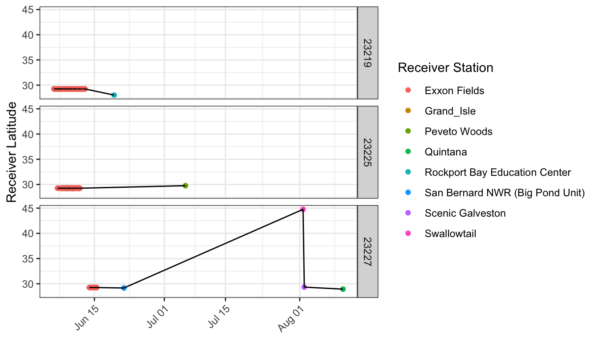
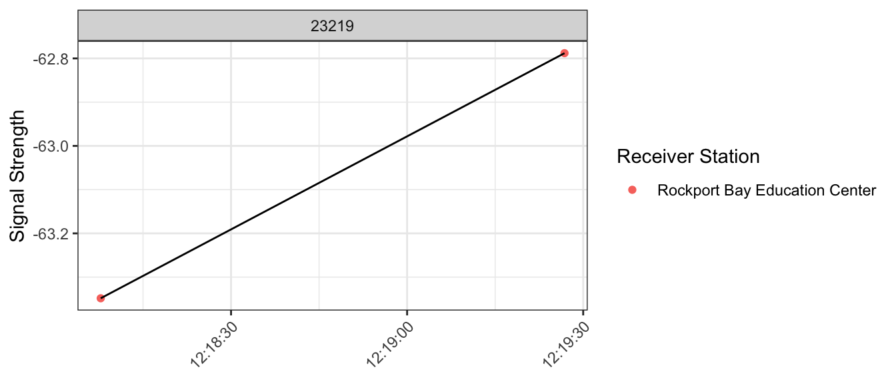
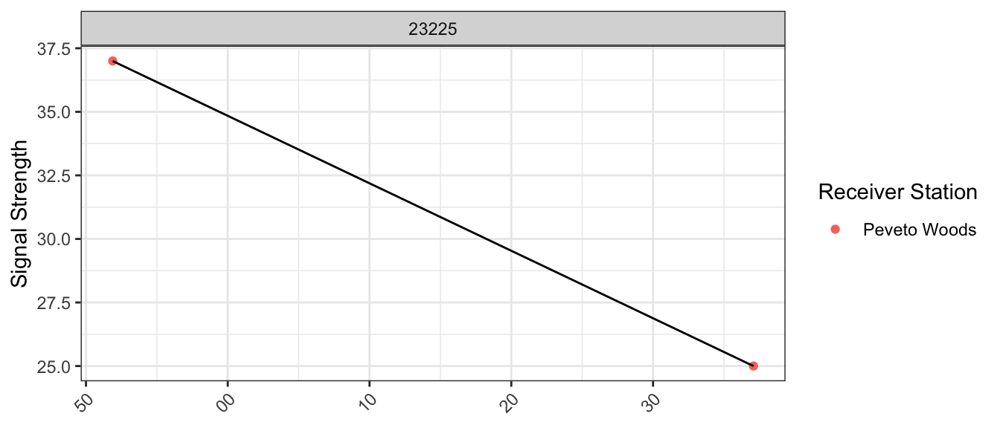
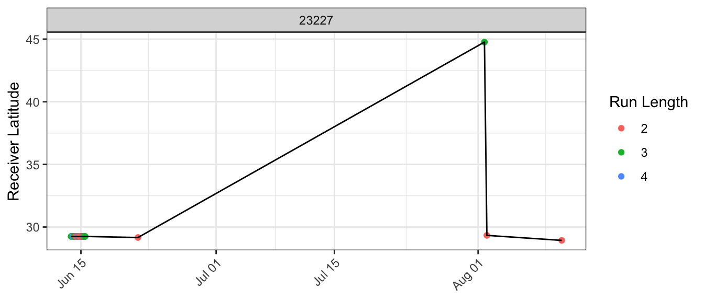
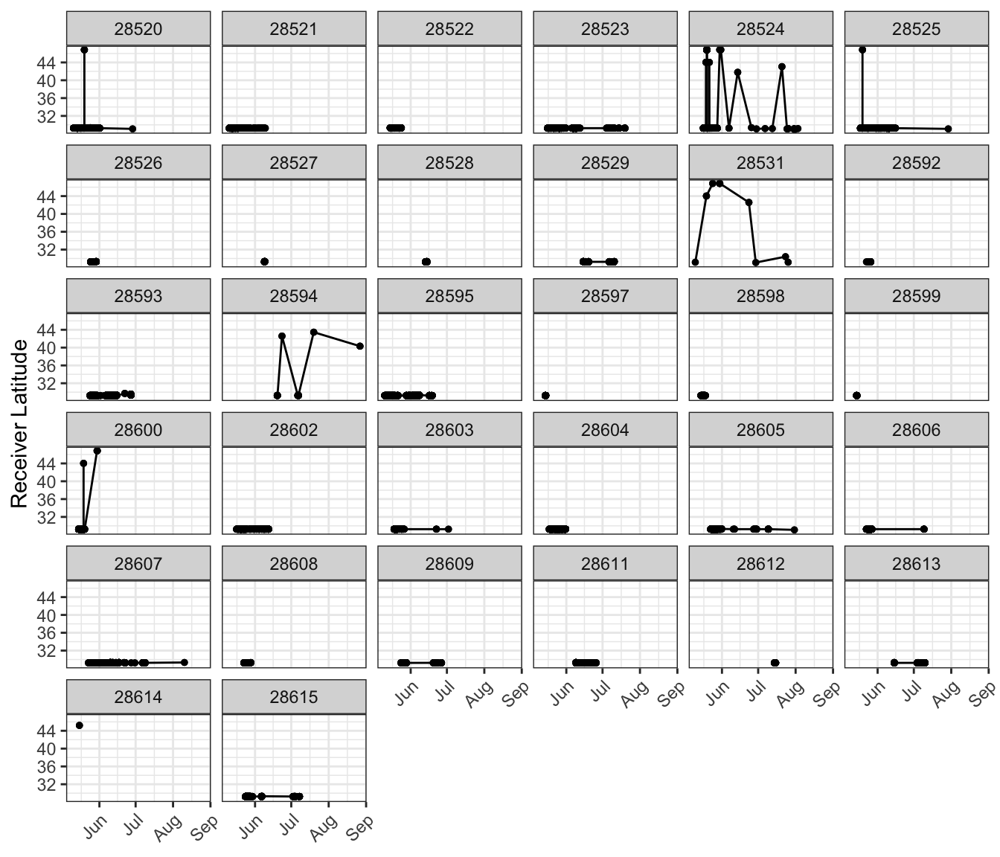
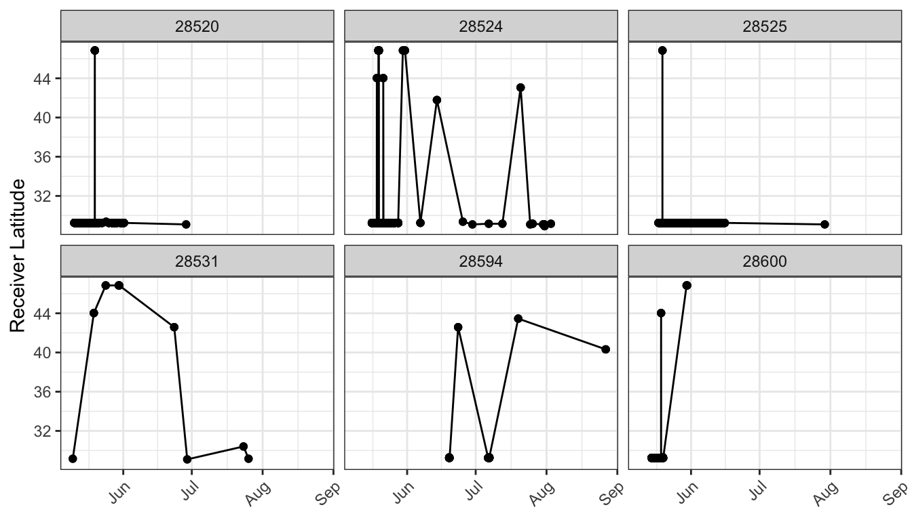
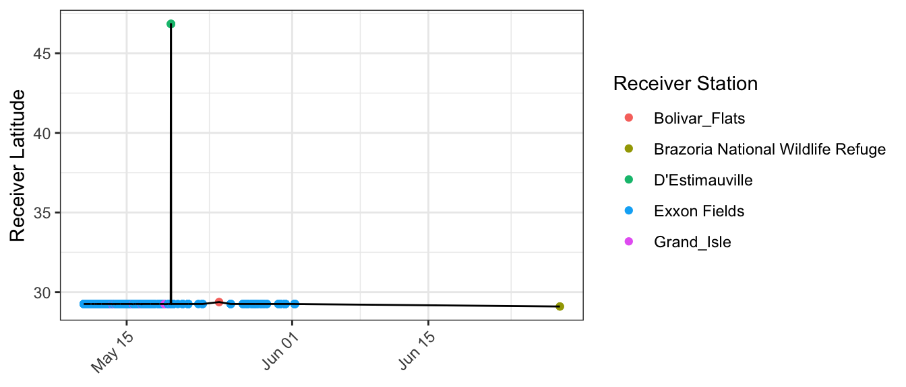
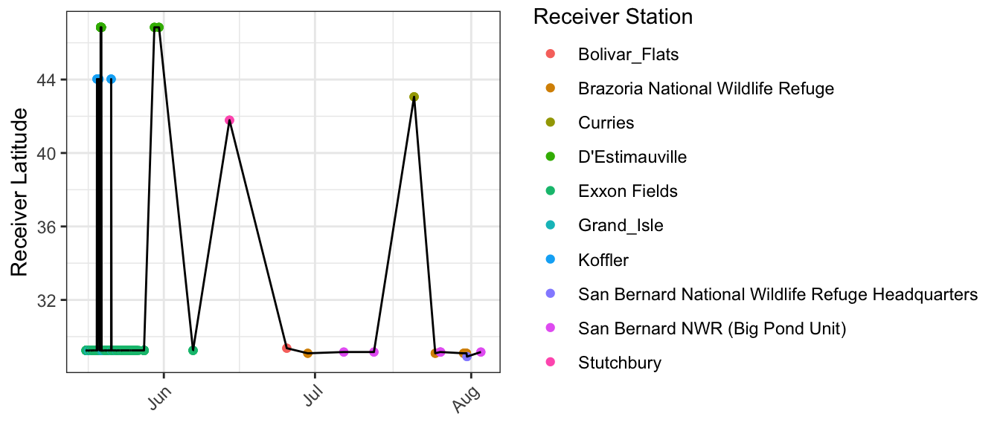
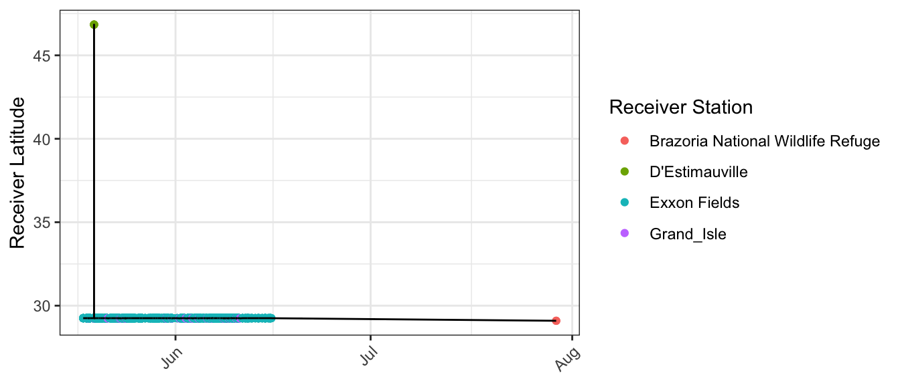
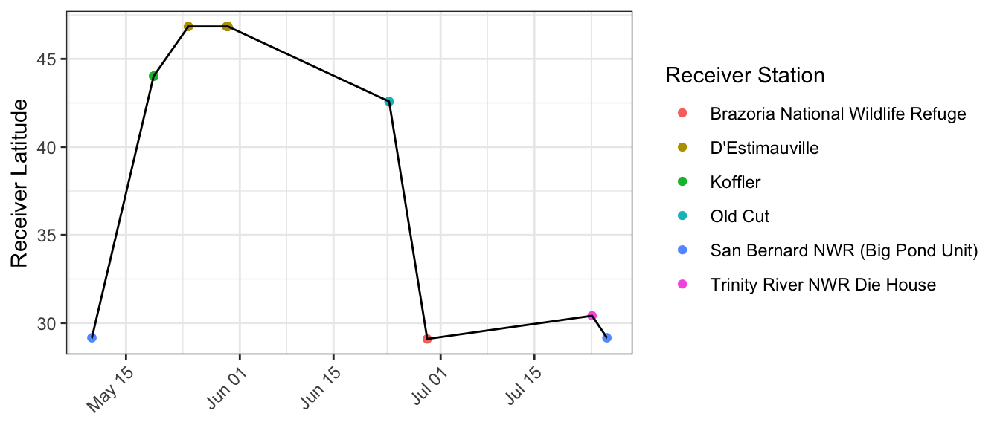

A Appendix - Downloading and Cleaning Data
Detailed instructions for accessing and understanding data can be found in the Motus R Book, available here.
A.1 Loading Packages
In order to download data and complete the analysis you will need a number of packages, if you do not already have them installed, follow the instructions below:
# Install devtools to allow download of Motus R
# packages
install.packages("devtools")
# Install motus for data download, data
# manipulation, visualization and analysis
install_github("MotusWTS/motus")
# install motusClient for data download
install_github("MotusWTS/motusClient")
# install packages for analysis
install.packages("ggmap")
install.packages("tidyr")
install.packages("gridExtra")
install.packages("ggplot2")
install.packages("viridis")
install.packages("knitr")
install.packages("pander")Once packages are installed, load them into your project. To download and filter the data we will only need use of the motus R package which is loaded with the ‘library’ function:
# load motus package
library(motus)A.2 Data Download - project 132
Downloading data from Motus requires you to enter your Motus username and password, you will only have access to data for projects to which you are registered. To register with Motus visit https://motus.org/.
To download data for the first time to your working directory:
proj.num <- 132 # assign the correct project number
sql.motus <- tagme(projRecv = proj.num, new = TRUE,
update = TRUE)To update an existing sql.motus file to your working directory:
proj.num <- 132 # assign the correct project number
sql.motus <- tagme(projRecv = proj.num, new = FALSE,
update = TRUE)A.3 Accessing Data
Data is downloaded as an SQL file, to analyze data the SQL file is converted into a flat file and only relevant columns and Least Tern tags are retained. At the same time a new column for receiver latitude and longitude is created, consisting of the GPS latitude if available, infilled with the deployment latitude if GPS is not available.
tbl.alltags <- tbl(sql.motus, "alltags") # convert sql file to a tbl
df.alltags <- tbl.alltags %>%
mutate(recvLat = if_else((is.na(gpsLat)|gpsLat == 0), # create new lat/lon variables
recvDeployLat, gpsLat),
recvLon = if_else((is.na(gpsLon)|gpsLon == 0),
recvDeployLon, gpsLon)) %>%
#remove unnecessary columns
select(-ambigID, -tagProjID, -sigsd, -noise, -freq, -freqsd, -slop, -burstSlop,
-done, -bootnum, -tagType, -codeSet, -mfg, -tagModel, -tagLifespan,
-nomFreq, -pulseLen, -markerNumber, -markerType, -tagDeployAlt,
-tagDeployComments, -fullID, -recvDeployAlt, -antHeight, -speciesFR,
-speciesSci, -speciesGroup, -tagProjName, gpsAlt, recvSiteName) %>%
filter(speciesEN == "Least Tern") %>% # keep only LETE
collect() %>%
as.data.frame %>% # convert tbl to data.frame
# convert times to datetime
mutate(ts = as_datetime(ts, tz = "UTC", origin = "1970-01-01"),
tagDeployStart = as_datetime(tagDeployStart, tz = "UTC", origin = "1970-01-01"),
tagDeployEnd = as_datetime(tagDeployEnd, tz = "UTC", origin = "1970-01-01"))A.4 Dataframe of motusTagID and Lotek tag ID
tagIDs <- unique(select(df.alltags, motusTagID, mfgID))A.5 Cleaning Data
Projects with receivers in the tagging area are 31, 65, 120, and 132, initially all detections from receivers registered to these projects will be retained. For all other projects any detections with a runLen < 2 are deemed to be false positives. Filter ‘blocks’ are created each time a detection is identified as a false positive, at the end of the cleaning process all the false positive blocks are combined to create a single filter to apply to all the data.
First, remove detections outside tagging area with a runLen of 2:
# create list of projects with receivers outside the tagging area
nonTaggingLocs <- unique(filter(df.alltags,
!(recvProjID %in% c(31, 65, 120, 132)))$recvProjID)
lete17 <- filter(df.alltags, year(ts) == 2017, # filter to only 2017 detections
!(recvProjID %in% nonTaggingLocs & runLen == 2)) %>%
# remove detections with a runLen <= 2 for stations outside tagging area
arrange(motusTagID, ts)
# create the first filter block
df.block.0 <- filter(df.alltags, year(ts) == 2017,
recvProjID %in% nonTaggingLocs & runLen == 2)Next, detections are plotted by latitude to visually identify other questionable detections to eventually create more blocks of false positives for the final filter. Below are detections for all 2017 tags by latitude: Tags are removed that were never detected at the breeding site, these are 23220, 23221, and 23222.
# remove tags 23220, 23221, 23222 and create a
# block
lete17 <- filter(lete17, !(motusTagID %in% c(23220,
23221, 23222)))
df.block.1 <- filter(df.alltags, year(ts) == 2017 &
motusTagID %in% c(23220, 23221, 23222))Next, tags that were detected outside the breeding area are examined: 23212, 23214, 23216, 23219, 23223, 23225, 23226, 23227, 23270. Below is a plot of these tags, and a table displaying the number of runs with runLen < 5 for each station:
## recvDeployName runLen n
## 1 Bolivar_Flats 2 2
## 2 Peveto Woods 2 2
## 3 San Bernard National Wildlife Refuge Headquarters 2 2
## 4 Sabine NWR 2 4
## 5 Rockport Bay Education Center 2 6
## 6 High_Island 2 8
## 7 Wisner 2 8
## 8 Scenic Galveston 2 24
## 9 Quintana 2 28
## 10 San Bernard NWR (Big Pond Unit) 2 30
## 11 Grand_Isle 2 82
## 12 Exxon Fields 2 4688
## 13 RTNJ 3 3
## 14 Swallowtail 3 3
## 15 Drasher 3 9
## 16 Wisner 3 12
## 17 Waggoners Gap 3 60
## 18 Koffler 3 72
## 19 Grand_Isle 3 120
## 20 Burntpoint 3 258
## 21 Los Vientos Forest 3 411
## 22 Exxon Fields 3 5736
## 23 Koffler 4 12
## 24 Waggoners Gap 4 12
## 25 Los Vientos Forest 4 32
## 26 Grand_Isle 4 72
## 27 Exxon Fields 4 4952Stations that stand out as having a large number of runLen = 3, far outside the tagging area include: Koffler, Waggoners Gap, Burntpoint, and Los Vientos Forest. These are likely sites with a large amount of background radio noise leading to increased levels of false positives. To confirm, a few examples are provided below.
For tag 23216, given the amount of time and distance between detections at RTNJ and Exxon Fields, and between Koffler and Exxon Fields, these are not biologically possible flights and these detections will be removed:
For tag 23270, it again appears there are clear false positives that can be removed at Koffler, Los Vientos Forest, Drasher, and Waggoners Gap. These detections will therefore be flagged as false positives: 
Create a filter block to remove noisy sites with high amounts of short runLen’s:
df.block.2 <- filter(df.alltags, year(ts) == 2017,
recvDeployName %in% c("Drasher", "RTNJ", "Koffler",
"Waggoners Gap", "Burntpoint", "Los Vientos Forest"))Removing the sites with a high number of low runLen’s (Drasher, RTNJ, Koffler, Waggoners Gap, Burntpoint, Los Vientos Forest) results in much cleaner plots:
There are three remaining tags with questionable detections: 23219, 23225, 23227:

To determine if detections are reliable, each tag will be examined on an individual basis.
Tag 23219: Detections at Rockport Bay Education Center are only runLen 2, these are not reliable detections: 
Tag 23225: detections at Peveto Woods are only runLen 2, these are not reliable detections: 
Tag 23227: all detections after June 15 are of runLen 2, except for detections at Swallowtail (receiver latitude = 45, runLen = 3) which are too far away to be legitimate detections so these will be removed. 
A filter block is created to remove false detections for the three tags above:
df.block.3 <- filter(df.alltags, year(ts) == 2017,
motusTagID == 23219 & recvDeployName == "Rockport Bay Education Center")
df.block.4 <- filter(df.alltags, year(ts) == 2017,
motusTagID == 23225 & recvDeployName == "Peveto Woods")
df.block.5 <- filter(df.alltags, year(ts) == 2017,
motusTagID == 23227 & ts > as.POSIXct("2017-06-15"))The process is repeated with 2018 detection data, starting by removing detections from stations outside the tagging area with a runLen < 2:
# create list of projects with receivers outside the tagging area
lete18 <- filter(df.alltags, year(ts) == 2018, # filter to only 2018 detections
!(recvProjID %in% nonTaggingLocs & runLen == 2)) %>%
# remove detections with a runLen < 2 for stations outside tagging area
arrange(motusTagID, ts)
# create the first filter block
df.block.6 <- filter(df.alltags, year(ts) == 2018,
recvProjID %in% nonTaggingLocs & runLen == 2)Next, all tags are plotted by latitude to visually identify potential false positives.
Plot of all 2018 tags by latitude:

Tags that were never detected at the breeding site are removed and a filter block is created: 28614
lete18 <- filter(lete18, !(motusTagID == 28614))
df.block.7 <- filter(df.alltags, year(ts) == 2018,
motusTagID == 28614)Next tags that were detected outside breeding area were examined: 28520, 28524, 28525, 28531, 28594, 28600

Again, runLen for these detections is examined:
filter(lete18, motusTagID %in% c(28520, 28524, 28525,
28531, 28594, 28600), runLen < 5) %>% group_by(recvDeployName,
runLen) %>% summarize(n = length(motusTagID)) %>%
as.data.frame() %>% arrange(runLen, n)## recvDeployName runLen n
## 1 San Bernard National Wildlife Refuge Headquarters 2 2
## 2 Trinity River NWR Die House 2 2
## 3 Bolivar_Flats 2 4
## 4 East Grand Terre 2 6
## 5 San Bernard NWR (Big Pond Unit) 2 14
## 6 Brazoria National Wildlife Refuge 2 18
## 7 Grand_Isle 2 82
## 8 Exxon Fields 2 3174
## 9 BPLH 3 3
## 10 Curries 3 3
## 11 Drasher 3 3
## 12 Stutchbury 3 3
## 13 Old Cut 3 6
## 14 Koffler 3 12
## 15 Grand_Isle 3 48
## 16 D'Estimauville 3 159
## 17 Exxon Fields 3 2391
## 18 Koffler 4 8
## 19 D'Estimauville 4 20
## 20 Grand_Isle 4 32
## 21 Exxon Fields 4 1592Stations that stand out as having a large number of runLen = 3, far outside the tagging area include:D’Estimauville, and as in 2017 Koffler. These are likely sites with a large amount of background radio noise leading to increased levels of false positives. Tags detected at these stations are examined individually to remove false positives.
Tag 28520: The detections at D’Estimauville in Quebec are not biologically possible given the timing, and was also flagged as a noisy site, these detections are flagged as false positives. 
Tag 28524: Given the amount of time and distance between detections at Koffler and Exxon Fields, and between D’Estimauville and Exxon Fields, these are not biologically possible flights, they were also flagged as noisy stations. The detections at Stutchbury and Curries are of runLen 3, and occur in Ontario and Pennsylvania respectively. These detections are therefore flagged as false positives. 
Tag 28525: Just as with tag 28520, the detection at D’Estimauville will be removed.

Tag 28531: Again, it is unlikely that this tag was in Ontario and Quebec in June so detections at Koffler, Old Cut, and D’Estimauville will be removed.

Tag 28594: Again, it is unlikely that this tag was in Nova Scotia, Ontario, or Pennsylvania (stations BPLH, Old Cut, and Drasher respectively), and all runLen are 3, so detections at these stations will be removed.
Tag 28600: Detections at Koffler and D’Estimauville once again appear problematic and will be removed.
Since all false positives in these cases are for the same stations, one filter block is used to apply to these false detections:
df.block.8 <- filter(df.alltags, year(ts) == 2018,
recvDeployName %in% c("D'Estimauville", "Koffler",
"Stutchbury", "Curries", "Old Cut", "BPLH",
"Drasher"))Here the plots are redone after removing the above identified false positives:
Now that filter blocks have been created for all false positives, a single custom filter is created for all false positives. The Motus R package offers functionalities to save your filters directly within your .motus file. Once they’re saved in your database, you can do the type of left_join as below without having to rely on data frames or an RDS file to store your data. More info can be found in Appendix D of the Motus R Book.
# Combine our df.blocks into a single data frame,
# and apply a probability of 0 for filtered
# records.
df.block.all <- bind_rows(df.block.0, df.block.1, df.block.2,
df.block.3, df.block.4, df.block.5, df.block.6,
df.block.7, df.block.8) %>% mutate(probability = 0)
# Create a new filter with the name filtFalsePos
# and populate it with df.block.all
tbl.filter = writeRunsFilter(sql.motus, "filtFalsePos",
df = df.block.all, delete = TRUE)
# Obtain a table object where the filtered records
# from tbl.filter have been removed
tbl.alltags.sub <- left_join(tbl.alltags, tbl.filter,
by = c("runID", "motusTagID")) %>% mutate(probability = ifelse(is.na(probability),
1, probability)) %>% filter(probability > 0)